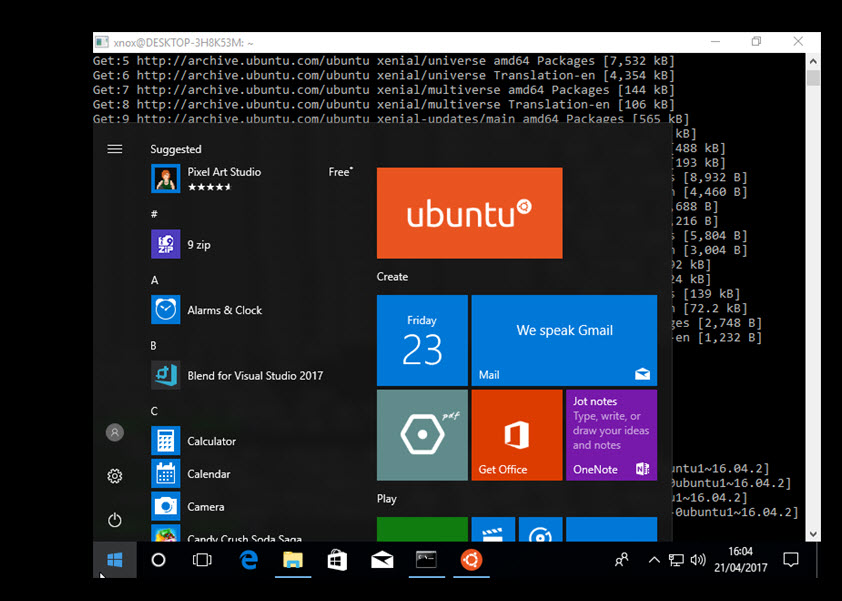

How can we work Ubuntu from Windows10
By Geo V L
We can configure Ubuntu Linux from your Windows 10 machine as Windows App. When we work with static site generators like Hugo or need to check any thing in linux from linux machine we can choose this method of linux

For configuring this in our Windows10 machine we need to follow the following steps.
Initial Settings
When we start directly install the Linux app in windows we may face an issue that Subsystem not enabled “Press any key to continue” in linux. To avoid this error we need to enable Microsoft Windows Subsystem Linux. This can be done either by using power shell feature of Windows 10 using ‘Open as Administrator’ or with command prompt open as administrator. After opening your command window in either method we need to run the following command
- Enable Windows optional Feature : Microsoft Windows Subsystem Linux
Enable-WindowsOptionalFeature -Online -FeatureName Microsoft-Windows-Subsystem-Linux
- Reboot Your Windows10 PC. This may take few minutes to reboot your pc after update.
- Using start menu select the Ubuntu icon to start terminal
- When you start and your linux distribution from terminal you find an issue like these. When trying to install new applications using apt-get, the command seems to fail every time.
`
Err http://security.ubuntu.com trusty-security Release.gpg
Could not resolve 'security.ubuntu.com'
Err http://archive.ubuntu.com trusty Release.gpg
Could not resolve 'archive.ubuntu.com'
Err http://archive.ubuntu.com trusty-updates Release.gpg
Could not resolve 'archive.ubuntu.com'
`
To fix these issue we need to configure this Ubuntu or Linux distribution on your Windows firewall or you anti virus system firewall settings.There may be a a toggle for allowing/disallowing firewall access to Ubuntu. Turns out you have to go into
Firewall > Advanced Settings > Expert Settings > Advanced Settings > Allow any traffic of Windows subsystem for Linux.